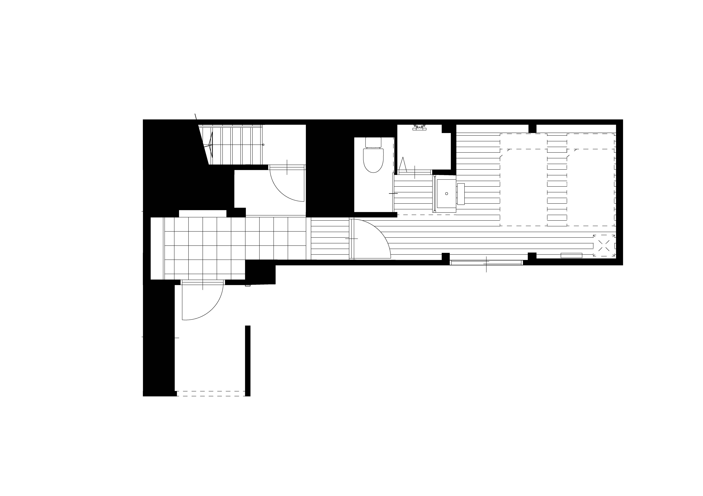

官兵衛
KANBEI
— Floor Plan / 1F —

— Floor 1 / 2 Guests —
간베에
— Kanbei —
책사의 고요함, 어른의 대화.
히데요시의 책사로서 난세를 꿰뚫어 본 지략가, 구로다 간베에. 차분한 색조의 공간은 두 사람이 느긋하게 이야기를 나누는 밤에 어울리는 1층 객실입니다. 싱글 침대 2개와 샤워실・화장실・세면대를 갖춘, 아담하고 실용적인 방입니다.
CAPACITY2명
AREA16.5㎡
BED싱글 × 2
BATH샤워실
1박 ¥18,700〜37,400（2명）